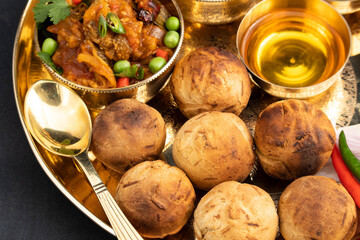

Back to States
Litti Chokha

Ingredients
- 2 cups wheat flour
- 1 cup sattu (roasted gram flour)
- 1 onion (finely chopped)
- 2-3 garlic cloves (crushed)
- 1-inch ginger (grated)
- 2 green chilies (chopped)
- 1 tbsp mustard oil
- 1 tbsp pickle masala
- Salt to taste
- Chopped coriander leaves
- For chokha: boiled potatoes, roasted eggplant, tomatoes, garlic, mustard oil
Instructions
1. Mix wheat flour with water and knead a soft dough. Let it rest for 20 mins.
2. For filling: Combine sattu, onion, garlic, ginger, chilies, mustard oil, pickle masala, and salt.
3. Make dough balls, stuff with sattu mix, and seal properly.
4. Roast on tandoor or bake in an oven until golden brown. You can also roast on an open flame.
5. For chokha: Mash boiled potatoes, roasted eggplant, tomatoes, garlic, mustard oil, and salt.
6. Mix and serve Litti hot with chokha and ghee on top.